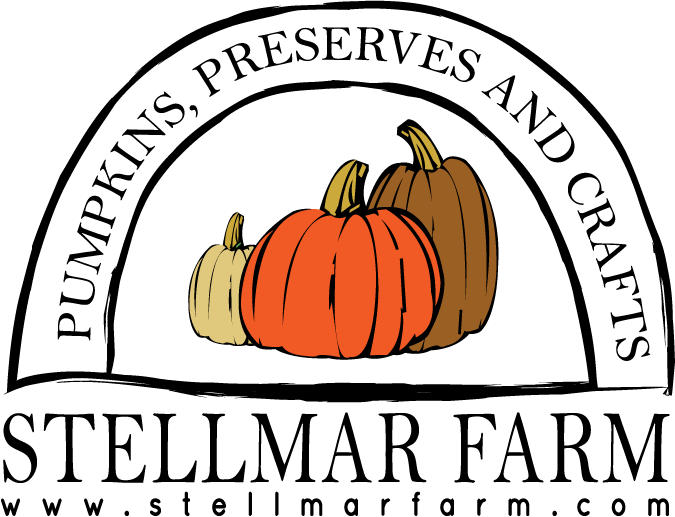
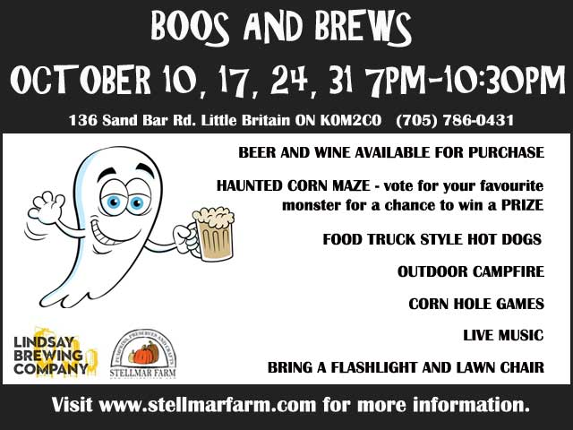
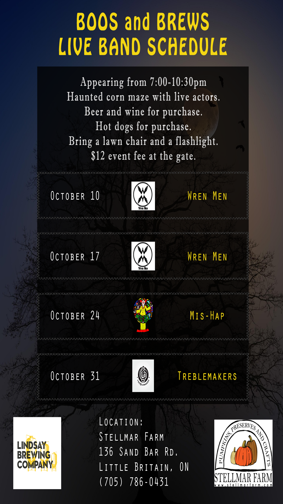

Boos and Brews
Flashlight Corn Maze
Live Music

Boos and Brews at Stellmar Farm: October 10th, 17th, 24th and 31st from 7pm - 10:30pm.
Join us at the farm from 7pm - 10:30pm and enjoy our spooky Corn Maze. We are pairing up with the Lindsay Brewing Company/Pie Eyed Monk brewery for Boos and Brews. They will be here with their Retro Beer wagon serving their delicious beverages in our beer garden. New this year: we will have live music featuring local bands. There will also be food truck style hot dogs, chips and pop for purchase. Enjoy the warmth of an outdoor campfire while listening to the live music. Make sure to bring a flashlight, a lawn chair and a strong heart! Event fee for all of the above is $12 per person.


Check back here, Facebook or Instagram for updates.